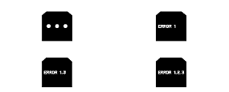

Como Diagnosticar Avarias nos Indicadores

|
A Verificação dos Segmentos LCD
Ao activar o modo de auto-diagnóstico, o visor LCD indica ‘‘· · ·''. O objecto indicado cintila cinco vezes.
|

|
A Verificação da Linha de Comunicação
Enquanto no modo de auto-diagnóstico, é iniciada a Verificação da Linha de Comunicação após a Verificação dos Segmentos LCD.
Se todos os segmentos se ligam, a linha de comunicação está boa. Se estiver avariada, será indicada a palavra ‘‘ERRO'' no visor do conta-quilómetros seguida de número(s).
Lista de Código de Erro
Se for encontrado qualquer erro de linha de comunicação F-CAN ou B-CAN, passe à verificação de DTC utilizando o HDS.
|
Indicação de Exemplo
 |
|
Como finalizar a Função de Auto-diagnóstico
BLOQUEIE (0) a ignição.
NOTA: Se a velocidade do veículo for superior a 2 km/h, a função de auto-diagnóstico termina.
|